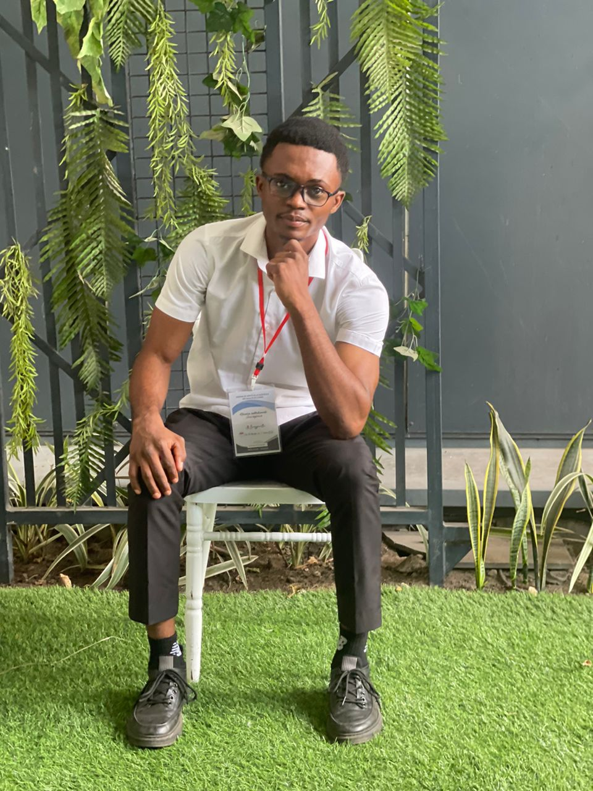

Christian Gram
Brazzaville, Congo • Fondateur, C.Gram IT Service

Administrateur Système & Développeur Full-Stack.
Issu d'un parcours universitaire en biologie, j'ai choisi de me spécialiser en informatique pour fonder C Gram IT Services. Certifié aux États-Unis en ingénierie de support, je maîtrise la gestion réseau (TCP/IP, LAN/WAN, DNS, DHCP), l'administration de serveurs et la virtualisation. Je perfectionne aujourd'hui mes compétences en programmation web, en bases de données SQL et en scripts Python. Ce double profil unique en sciences de la vie et en technologies numériques me prépare à propulser de futurs projets innovants dans le domaine de la bioinformatique.